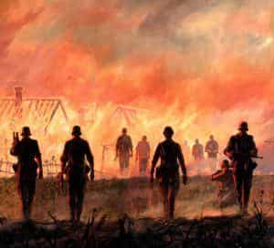

Kiron is a somber European man who devotes most of his time to making money, reading, working out and plotting revenge against the people who turned the world upside down.


You have all felt the change in the air, no doubt. The stuffiness, the tension, the leaden heat that only comes before a major storm. Birds land and ruffle up their feathers, animals scurry and hide, and the media amps its venom-spitting to record volumes. However, if you look closely, you will notice that it is only the rank-and-file panicking. Their owners continue to act like nothing is happening. There are reasons for that, and in this article I will try to cover most of them.
Take an ordinary European man—an average Joe (Bob, Hans, Pierre, Sven, Pablo…), a salt-of-the-earth guy who works a humble job, makes moderate money and watches ball games. He might be married or taking care of his parents or grandparents; regardless, he has mouths to feed. On his way to work and back, Joe routinely encounters numerous freaks with dyed hair, piercings, tattoos and ridiculous clothes. They usually give him contemptuous glares, if they bother to acknowledge him at all. Rich, pampered customers Joe caters to in his line of work treat him the same. But Joe isn’t really bothered: as long as his family is fed and he can crack open a cold one in the evening while watching his favorite team or show on TV, he is happy.
However, one day Joe comes to work and discovers that he and most of his coworkers have been replaced by foreigners, with measly sums offered as compensation. Dejected and worried, he heads home. On his way back, he is accosted by a bunch of Muslim immigrants, while nearby neon-haired freaks laugh and film him. Then his mother calls, saying that Grandma fell down the stairs, broke a bone and now requires costly surgery. Upon arrival home, Joe hastily calls a few of his ex-customers with whom he thought he had built something akin to a rapport, probing for job opportunities. However, all he gets from them is callous disregard: “Sorry to hear you got fired. Can’t help. Bye.”
Frustrated, Joe plops down in front of his TV, only to hear his favorite comedian mock White males like him while praising the politician responsible for mass lay-offs and mass immigration. Switching channels does not help—wherever he ends up, all he sees and hears is hatred directed at him and his. He is called a monster and a descendant of murderers, his culture is denounced and degraded. All this was happening long before Joe got laid off, of course, but between watching football matches, guzzling beer and working, he was too tired to really get into it. He could always run away to another distraction. Now he no longer can.

I am a survivor of a civil war that lasted for six years, tearing my home country apart and killing tens of thousands of people. I was only a teenager back then, but had to struggle for survival alongside everyone else. The country was in freefall—there was no electricity, no water, no gas. Starvation made Congo look like paradise. Me and my parents dug around dumpsters and landfills, trying to find something edible. Centuries-old family relics and heirlooms were pawned for scraps of food; furniture was chopped into firewood, books used as kindling. Every day news came of someone’s relative, friend or neighbor dying—either shot by one of the warring sides, murdered by bandits, or killed in a knife fight over a loaf of bread.
My reward for survival was a metric ton of priceless experience and many life lessons, the first of them being: adversity brings out the best and the worst in people. Those who have nothing to lose usually turn to selfish lone wolf survival, but those whose family and children become jeopardized. Nothing lights a fire under a man’s ass like the prospect of seeing his loved ones starve to death, and this moment may well be upon us soon. Ever seen a food riot? I have. Do you know what a guy whose children haven’t eaten for three days is capable of? Anything. Now imagine what the rioters are able to do if well-armed and perfectly aware just who is responsible for the situation.
Here lies the difference, the red line that separates us from (((them))). We know how bad things can get. All of us, at some point or another, had to struggle through hardship and make risky decisions that endangered us or our loved ones. Some of us survived wars, some lived under communism, others eked out an existence in anarchic, crime-ridden states or spent most of our lives fighting extreme poverty. Memories of this linger in the back of our heads as an eternal reminder: no matter how peaceful and prosperous things seem, devastation is always lurking around the corner. I call this feeling “retrospective tension.”
Still, Western men have been kept placid through endless distractions and lies for decades. Those who resisted anyway were quickly sent behind bars, while the majority was content to watch their nations get slowly picked apart by parasites. Several generations of neutered pseudo-males were born. But now the haze is dissipating. Bewildered, people look around and see ruin. They cannot slip back into soothing illusions and they do not have anyone but themselves to rely on. The old memories are coming back.
At the moment we have the entire population of the West—about 400 million men, many of them able-bodied—backed into a corner, angry and desperate but definitely not hopeless.

These dessicated rodents cling rabidly to their lives while stealing and poisoning yours. After they croak, their well-trained and numerous progeny will step in – unless stopped.
Inhabitants of ivory towers, however, have no cause for panic. Why would they? After all, their basic instincts never developed due to lack of any adversity in their lives. They are propelled through life by the dubious virtue of their relations, connections and inheritances, all without a care in the world. For entirety of their existence, they have never left the sterile comfort of boardrooms, villas, conference halls, luxurious hotels and posh restaurants.
Here’s the trick: these creatures do not know the world they live in—at all. They spend their lives surrounded by yes-men and servants, mingle with the vacuous and hypocritical “cream of society,” and keep contact with the outside only through mediums and filters. Lack of genuine human interaction, combined with an extremely decadent lifestyle and delusions of grandeur has culminated in them developing a completely demented view of reality.
Here lie the roots of their adherence to lurid ideologies and worldviews, as inability to understand the human mind results in total absence of empathy and tendency to view people as mindless cattle. Some, owing to their religious belief, openly think so. Their solution for the unruly masses is always the same—yet another economic crisis to send everyone scurrying. This time, however, they are in for a surprise.

Endangered species. Soon to be reclassified as extinct.
Nothing ever goes wrong in the little worlds of the (((elites))). It is those directly below them who are susceptible to panic, and nowhere it is seen more clearly than in today’s America, on the verge of Trump’s presidency. I am talking about the middlemen, the lightning rods—media moguls, millionaires, celebrities, pundits, low-tier politicians, lawyers and other detritus. They still mingle moderately with the common folk (some even do their own grocery shopping—get a load of these adrenaline junkies), so they are not entirely out of touch.
While as morally bankrupt, ruthless and degenerate as their owners, many of them have been in some actual trouble at least once in their lives. They also know, or at least suspect, how bad things can get, but they never learned from the experience, choosing to suppress it instead.
But today they see vivid, healthy rage in the eyes of others; they encounter those bold enough to openly defy their programming; they experience genuine hatred and contempt aimed at them. They recall their few interactions with the real people, glimpses of what these people are capable of when sufficiently provoked, and their knees start to shake.
What does it feel like to have your media empire, carefully built on seething disdain, reprehensible deeds and kissed backsides, crumble before your very eyes because people no longer want to swallow its poison? What is it like to have people spit at you in the street when for all your life, you imagined yourself to be nothing short of royalty? How does it feel to suddenly realize your callous words and evil actions have been carefully logged and that you will face responsibility for every single one? I wouldn’t know. But they will soon find out.
The panic is there, as real as it is crippling. And the most interesting part is that the middlemen are hesitant to inform their masters of what’s going on, in fear of getting thrown to the wolves. Desperate to hold on whatever scraps of power they have, they’d rather go down with the ship slowly than be tossed overboard as ballast. For them, there is no life outside ivory towers, and these very towers are about to go down in flames.

By slowly force-feeding the whole world a dish poisoned with apathy and degeneration, the “elites” have inadvertently taken a large bite themselves. Their arrogance, complacency and hubristic belief that things are always going according to plan will be their downfall, because the people’s anger has reached a fever pitch.
Parasites will be excised, filth will be cleansed, justice will be meted out and a new golden age for the West will dawn.
For the future belongs to us, and it will be glorious.
Read More: 7 Methods The Elites Use To Control Us